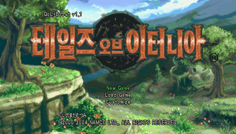
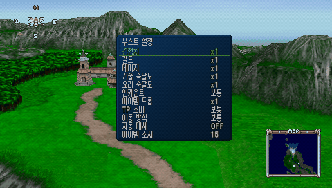
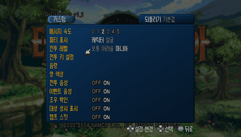

게임 소개
정보 공유가 끊긴 두 세계 인페리아와 셀시아스를 무대로, 사냥꾼 청년 리드가 하늘에서 떨어진 소녀 메르디를 만나며 시작하는 「테일즈」 시리즈 세 번째 작품입니다. 2005년 PSP판이 나왔고, 2026년 10월에는 그 PSP판을 바탕으로 한 리마스터판이 나왔습니다. 이 패치는 리마스터판에서 새로 생긴 기능 가운데 PSP에서 구현할 수 있는 것을 한글판 위에 더합니다. 한글 번역 자체는 기존 한글패치 V1.2 제작진의 작업입니다.
- 원작
- 테일즈 오브 이터니아 (남코, PSP판 2005)
- 장르
- RPG
- 바탕
- 일본판 ISO(ULJS-00015) + 한글패치 V1.2
- 이식 기능
- 리마스터판(2026) 편의·부스트 기능 일부
편의 기능
| 필드 빠른 이동 | 마을·던전에서 R을 누르고 있으면 이동 속도가 2배가 됩니다. 원래 있는 × 달리기와 같이 누르면 4배입니다. 벽 충돌과 맵 출구는 원래대로 동작합니다. |
|---|---|
| 월드맵 빠른 이동 | 월드맵에서 ×를 누르고 있으면 2배로 걷습니다. 월드맵의 L/R은 원래 카메라 회전이라 버튼을 다르게 했습니다. |
| 이동 방식 고정 | 부스트 메뉴의 「이동 방식」을 고속으로 두면 버튼을 누르지 않아도 2배로 움직이고, 이때는 R(월드맵은 ×)을 누르면 원래 속도로 걷습니다. |
| 대사 빨리 넘기기 | 이벤트 중에 R을 누르고 있으면 대사가 자동으로 빠르게 넘어갑니다. 예/아니오 같은 선택지에서는 멈춥니다. 대사만 넘기고 연출과 카메라 이동은 원래 속도입니다. |
| 자동 대사 | 부스트 메뉴의 「자동 대사」를 ON으로 두면, 대사가 다 나온 뒤 약 1.5초가 지나면 버튼을 누르지 않아도 다음으로 넘어갑니다. 선택지에서는 멈춥니다. |
| 마니아 난이도 | 원래는 클리어 데이터가 있어야 나오던 전투 레벨 「매니아」를 처음부터 고를 수 있습니다(커스텀 → 전투 레벨). |
부스트 메뉴
필드(마을·던전)와 월드맵에서 L과 R을 같이 누르면 「부스트 설정」 메뉴가 열립니다. ↑↓로 고르고 ←→로 값을 바꾸며, ×·○·Start·Select나 L+R을 다시 누르면 닫힙니다. 메뉴가 열려 있는 동안 게임은 멈춥니다.
| 경험치 | x0~x5. 전투로 얻는 경험치에 곱합니다. x0은 레벨을 올리지 않는 도전용입니다. |
|---|---|
| 갈드 | x0~x5. 전투로 얻는 갈드에 곱합니다 (최대 99,999,999). |
| 데미지 | x1~x5. 리마스터판과 같이 아군과 적 양쪽의 데미지에 모두 적용됩니다 (최대 30,000). |
| 기술 숙달도 | x1~x5. 술·기를 한 번 쓸 때 올라가는 사용 횟수(숙련도)를 배율만큼 올립니다 (최대 9,999). |
| 요리 숙달도 | x1~x5. 요리할 때 오르는 요리 숙련도에 곱합니다 (최대 100). |
| 인카운트 | 보통 / 적음 / 없음. 적음은 조우까지 걸리는 거리가 약 2배가 되고, 없음은 일반 몬스터와 마주치지 않습니다. 이벤트 전투는 그대로 일어납니다. |
| 아이템 드롭 | x1 / x2. 적이 아이템을 떨어뜨릴 확률을 2배로 합니다. |
| TP 소비 | 보통 / 절반. 술·기에 드는 TP를 절반(올림)으로 줄입니다. |
| 이동 방식 | 보통 / 고속. 고속이면 필드·월드맵을 기본 2배로 이동합니다(위 편의 기능 참고). |
| 자동 대사 | OFF / ON. 대사 자동 넘김을 켜고 끕니다. |
| 아이템 소지 | 15 / 99. 같은 아이템을 가질 수 있는 최대 개수입니다. 상점 구매 한도도 함께 바뀝니다. 귀중품(1개 한정)은 그대로입니다. |
처음 값은 모두 원래 게임과 같은 값(x1·보통·OFF·15)이라, 메뉴를 건드리지 않으면 원래 게임과 똑같이 동작합니다. 설정은 게임을 켤 때마다 처음 값으로 돌아갑니다(세이브에 저장되지 않음). 메뉴 글자는 게임 안 한글 글꼴을 그대로 써서 「숙련도」 대신 「숙달도」로 적었습니다.
화면



적용 방법
한글판 ISO 준비
일본판 ISO(ULJS-00015, 880,607,232바이트, CRC32
4129997D)에 한글패치 V1.2를 먼저 적용합니다. 결과 ISO는 899,168,256바이트, CRC3246FF65AF여야 합니다.이 패치 적용
한글판 ISO에
ToE_PSP_KR1.2_QoL_Boost_v1.1.xdelta를 xdelta로 적용합니다. PC에서는 Delta Patcher나 xdelta3(xdelta3 -d -s 한글판.iso 패치.xdelta 결과.iso)를 쓰면 됩니다. 결과 ISO CRC32는05718FD2입니다.실행
PPSSPP에서 실행합니다. 게임 목록에 「Tales of Eternia KR1.2 QoL v1.1」로 나오고, 타이틀 화면 왼쪽 위에 「QoL+Boost v1.1」이 보이면 제대로 적용된 것입니다. 한글판에서 쓰던 세이브를 그대로 이어서 쓸 수 있습니다.
이 xdelta는 한글패치 V1.2를 적용한 ISO용입니다. 일본판 원본 ISO에 바로 적용하면 맞지 않습니다.
알려진 문제
- 부스트 메뉴는 필드와 월드맵에서 열립니다. 전투 중이나 캠프 메뉴 안에서는 열리지 않습니다.
- 아이템 소지를 99로 쓰다가 15로 되돌리면, 15개를 넘게 가진 아이템은 다음에 같은 아이템을 얻을 때 15개로 줄어듭니다.
- 아이템 소지 99의 상점 구매 한도는 코드만 바꾸고 실제 상점에서는 시험하지 못했습니다.
- 전투 결과 화면에 보이는 경험치·갈드 숫자는 배율을 곱하기 전 값입니다. 실제로는 배율만큼 들어갑니다.
- 리마스터판 기능 가운데 목적지 아이콘, 자동 저장, 전투 재도전, 메뉴 퀵 회복, 이벤트 통째 스킵, 2회차 항목별 인계, 네레이드의 미궁 조기 개방, 그래픽·음성 전환은 넣지 않았습니다.
- PPSSPP에서만 시험했습니다. 실기(커스텀 펌웨어 PSP)와 후반 지역·보스전은 끝까지 확인하지 못했습니다. 이상한 점이 있으면 제보해 주세요.
바뀐 점
- 부스트 메뉴를 월드맵에서도 열 수 있게 함 (메뉴가 열려 있는 동안 이동 정지)
- 부스트 항목 추가: 이동 방식(보통/고속), 자동 대사(OFF/ON), 아이템 소지(15/99)
- 전투 레벨 「매니아」를 1회차부터 선택 가능
- 부스트 설정 메뉴 추가 (필드에서 L+R): 경험치·갈드 x0~x5, 데미지·기술/요리 숙달도 x1~x5, 인카운트 보통/적음/없음, 아이템 드롭 x1/x2, TP 소비 보통/절반
- 필드 R 빠른 이동, 월드맵 × 빠른 이동, 이벤트 R 대사 빨리 넘기기
- 타이틀 화면과 게임 목록 이름에 버전 표시
어셈블러: armips. 분석·검수: PPSSPP.